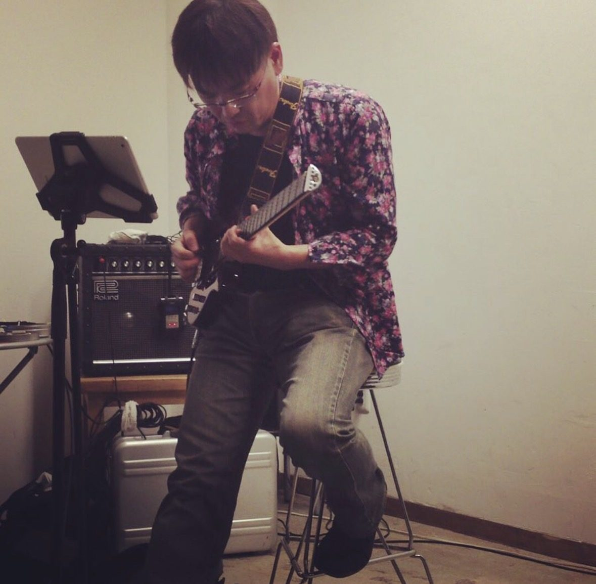

Artistic Activity
電子音響作曲家・ギタリストとしての演奏、作品制作。2025年以降はコンピューターを使わず、ギターと Sherman Filterbank 2 のみで音を作る「Thresholds of Presence」シリーズに取り組んでいる。

Current Work
ギターと Sherman Filterbank 2 のための電子音響作品。2025年作曲。コンピューターを取り除いたときに何が残るか——ギターの生の信号がアナログフィルタリングを通過する過程、楽器とその変容の境界、〈存在〉と〈不在〉の境界を3楽曲で探る。表題作は Forum Wallis 2026（スイス・Leuk Castle）に選出。
Archive
プロジェクト「Thresholds」のアーカイブページです。各ページは外部サイト（yasuhiro-otani.com）で公開しています。
Awards & Selections
Thresholds of Presence — Selection, Leuk Castle, Switzerland
Reverie for Guitar — World Premiere, National Sawdust, Brooklyn
nOt well Nothing noT Almost — World Premiere
gU-topia for solo Electric Guitar, 8-channel spatialized — Australia
The Difference Machine — Selection, Simon Fraser University, Canada
Battle Button — Award, Dresden, Germany
Artist Grant（USA）、Mills College（California）アーティスト・レジデンシー（1999–2000, 2001）
Performance
ライブ・パフォーマンス（9月）
PTYX — World Premiere, 8ch multichannel, 渋谷区文化総合センター大和田, Tokyo
UTSURO-BUNE — 新潟市能楽堂、和田淳子（振付）・角正之（舞踊）と共演
Reverie no.3（Vienna, World Premiere）／ nOt well Nothing noT Almost（Melbourne）
Discography
guitar, Sherman Filterbank 2
Single
Single
Single
guitar, 8-channel spatialized
PaleBlue Records
PaleBlue Records
Max / MSP
2025年以前は Max/MSP/Jitter を用いた多チャンネル空間音響作品を数多く制作。入門書『Max/MSP/Jitter入門』（BNN、2009年）を執筆したほか、『MAX Communication』シリーズ Vol.1–9（サウンド&レコーディング・マガジン、1996–1997年）を連載。2025年以降はコンピューターを使わない制作へと移行している。
See also